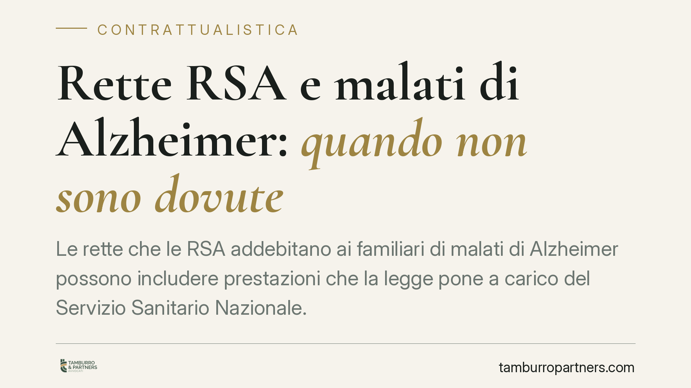

Rette RSA e malati di Alzheimer: quando non sono dovute
Le rette che le RSA addebitano ai familiari di malati di Alzheimer possono includere prestazioni che la legge pone a carico del Servizio Sanitario Nazionale. Quando la componente sanitaria prevale ed è inscindibile da quella assistenziale, parte degli importi versati può risultare non dovuta. Vediamo il quadro normativo e cosa valutare prima di agire.

Il contesto
Molte famiglie firmano con le RSA (Residenze Sanitarie Assistenziali) contratti che addebitano ai parenti del ricoverato l'intera retta, comprensiva sia della parte alberghiera e assistenziale sia di quella propriamente sanitaria. Per i malati di Alzheimer e, più in generale, per le patologie neurodegenerative in fase avanzata, questa impostazione solleva un problema giuridico preciso: parte di quelle prestazioni non può essere scaricata sul privato, perché la legge le colloca tra i Livelli Essenziali di Assistenza garantiti dal Servizio Sanitario Nazionale.
Inquadramento normativo
La chiave è la natura delle prestazioni erogate. Le prestazioni sociosanitarie ad elevata integrazione sanitaria sono disciplinate dall'art. 3-*septies* del D.Lgs. 229/1999 (che ha integrato il D.Lgs. 502/1992) e si caratterizzano per essere inscindibili: l'intervento sanitario e quello assistenziale non si possono separare perché rispondono in modo unitario al bisogno di cura del malato cronico non autosufficiente.
Quando la componente sanitaria è prevalente, il relativo costo rientra nei Livelli Essenziali di Assistenza (LEA), oggi definiti dal DPCM 12 gennaio 2017, ed è posto a carico del SSN (in continuità con i principi della L. 833/1978 istitutiva del Servizio Sanitario Nazionale). In questi casi, l'onere economico non può essere traslato per intero sul ricoverato o sui suoi familiari.
Da qui due conseguenze. La prima: un contratto che addebiti al privato una quota spettante al SSN può essere nullo per contrasto con norme imperative, ai sensi dell'art. 1418 c.c. La seconda: le somme indebitamente versate possono essere richieste indietro tramite l'azione di ripetizione dell'indebito prevista dall'art. 2033 c.c.
Su questo impianto si è formato nel tempo un orientamento giurisprudenziale, confermato anche da pronunce di merito, favorevole a riconoscere la non debenza della quota sanitaria. Va però usata prudenza: ogni decisione dipende dalla concreta documentazione clinica e contrattuale, e non esiste un automatismo valido per ogni situazione.
Implicazioni pratiche
Per la famiglia il nodo non è ideologico ma probatorio. Non basta invocare la diagnosi di Alzheimer: occorre dimostrare, caso per caso, che le prestazioni erogate avevano prevalenza sanitaria e che la condizione del malato richiedeva un intervento di cura, non solo di assistenza.
Contano quindi la cartella clinica, il piano assistenziale individuale, la classificazione del ricovero, l'eventuale certificazione di non autosufficienza. Conta anche il testo del contratto firmato con la struttura: come è articolata la retta, se distingue o meno la quota alberghiera da quella sanitaria.
Sul fronte del recupero delle somme serve attenzione ai tempi. La nullità del contratto, in sé, non si prescrive: può essere fatta valere senza limiti temporali. Ma il diritto a riottenere le somme versate — cioè l'azione di ripetizione dell'indebito — è soggetto all'ordinario termine di prescrizione decennale (art. 2946 c.c.). Chi aspetta troppo rischia di perdere la possibilità di recuperare i pagamenti più lontani nel tempo.
Il tema riguarda anche gli eredi, che possono subentrare nelle pretese del congiunto deceduto, e presuppone sempre un'interlocuzione con la ASL competente, soggetto tenuto in ultima istanza a farsi carico della quota sanitaria.
Cosa fare in concreto
- Recuperate la documentazione clinica completa: diagnosi, cartella, piano assistenziale individuale, certificazioni di non autosufficienza.
- Reperite il contratto con la RSA e tutte le ricevute o i bonifici dei pagamenti effettuati, ordinandoli per data.
- Fate verificare la natura delle prestazioni a un professionista, per stabilire se la componente sanitaria fosse prevalente e inscindibile.
- Controllate i termini: calcolate quali versamenti rientrano ancora nel decennio utile alla ripetizione.
- Interpellate la ASL e, se del caso, formalizzate la richiesta prima di avviare iniziative giudiziali.
La materia è tecnica e l'esito dipende dalla singola posizione. Consigliamo di far esaminare la documentazione prima di assumere decisioni, evitando sia rinunce premature sia aspettative non supportate dalle prove.
---
*Contributo informativo a cura di Tamburro & Partners - Avv. Giuseppe Tamburro. Non costituisce parere legale.*
Ogni contratto ha il suo equilibrio.
Se vuoi una revisione delle clausole o una redazione su misura, scrivi allo studio. Ti rispondiamo entro un giorno lavorativo.